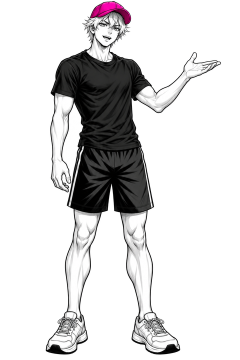

Plans

Example plan for healthy adults, built from the videos. It is a starting idea, not a prescription. Stop if pain is sharp or lasting.
The push-up ladder
| Step | Version | Notes |
|---|---|---|
| 1 | Wall push-up | Palms flat at chest height, arms straight, one line from head to heel. Walk your feet back to make it harder. |
| 2 | Incline push-up | Hands on a sturdy bench or table. The lower the surface, the harder it gets. |
| 3 | Floor push-up | Hands just below shoulder level, feet together, gaze at the floor. About 2 seconds down, 1 second up, until elbows reach about 90 degrees. |
Starter plan: 3 days a week (example)
2 to 3 sets of about 8 to 12 clean reps, using the hardest version you can do with good form. More than 12 easily? Move up one step. Cannot reach 8 clean reps? Move down one step.
Home starter plan (from Video 003)
Example, not a prescription. Two or three non-consecutive days a week.
| Move | Note |
|---|---|
| Incline push-up | Hands on a sturdy surface. |
| Table row (optional) | Only use a support specifically verified as suitable for your body weight. Appearance or a quick push test cannot guarantee a table is safe. If you cannot verify it, skip this exercise: no table is needed for push-ups, squats or bridges, and the next video covers training your back with almost no equipment. |
| Bodyweight squat | Control the way down. |
| Glute bridge | Squeeze at the top, no back arching. |
Pull-up options (from Video 004, in review)
Four coaching options. No trial we found tested them as a ladder, so this is coaching practice, not proven science. Choose a version you can control, on equipment you trust. If you cannot verify the setup, skip that option.
| Option | What it is |
|---|---|
| 1 Hang | Straight arms, shoulder blades drawn down and back slightly. Count in seconds, stop before grip or form breaks. |
| 2 Row | Pull your chest toward a secure support. We have no evidence this exact exercise gets beginners to a first pull-up faster. |
| 3 Band-assisted | A resistance band supports part of your weight. Follow the band's instructions and check band and bar before loading them. |
| 4 Slow lowering | Reach the top from a stable step, lower as slowly as you can control. If you drop suddenly, it is too hard for now. |
Example starter session (illustrative, not a tested prescription)
Two or three short hangs, then two or three sets of a pulling variation you can control. Rest until you can keep good form. Add slow lowering only if you can control the descent.
4-week tracker
Tap a day to mark it done. Twelve sessions is a suggestion: resting or skipping a day never resets or penalises anything.
Push-up log